1. Introducción
La electricidad, en una forma u otra, se encuentra en casi todo lo que nos rodea: se encuentra en los relámpagos que se producen durante las tormentas, en la chispa que salta bajo los pies cuando los arrastras sobre una alfombra y en la fuerza que mantiene unidos los átomos en forma de moléculas. Está formada de partículas cargadas en movimiento.
Las cargas eléctricas elementales son el electrón y el protón, que tienen la propiedad de atraerse o repelerse entre sí.
Carga neta y cuantización de la carga
Se llama carga neta a la desigualdad entre el número de protones y de electrones:
- Un objeto adquiere carga positiva ($+$) si presenta déficit de electrones.
- Un objeto adquiere carga negativa ($-$) si presenta exceso de electrones.
Por tanto, la carga de todos los cuerpos es un número entero de veces la carga del electrón (positiva si faltan electrones y negativa en caso contrario). Hay una unidad mínima de carga que es la del electrón (o la del protón).
La unidad de carga en el Sistema Internacional (S.I.) es el culombio ($\text{C}$), siendo el valor elemental de la carga:
$$e = 1,6 \cdot 10^{-19}\text{ C}$$Así, un culombio equivale a la carga de $6,25 \cdot 10^{18}$ electrones.
2. Fuerzas entre cargas en reposo; ley de Coulomb
Enunciado de la Ley de Coulomb
La fuerza con que se atraen o se repelen dos cargas puntuales (igual en módulo para ambas) es directamente proporcional al producto de las cargas e inversamente proporcional al cuadrado de la distancia entre ellas; su dirección es la de la recta que las une y su sentido es de atracción o repulsión según las cargas sean de distinto o del mismo signo.
Expresión escalar y vectorial
$$F = \frac{K q_1 q_2}{r^2} \qquad ; \qquad \vec{F} = \frac{K q_1 q_2}{r^2}\vec{u}_r$$Donde $q_1$ y $q_2$ representan el valor de las cargas y $r$ la distancia que las separa.
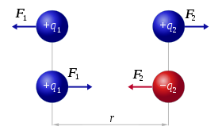
Propiedades de la fuerza eléctrica (comparación con la fuerza gravitatoria)
Las propiedades de esta fuerza pueden deducirse por comparación con la fuerza gravitatoria:
- Es una fuerza central.
- Depende de las cargas y de la distancia que existe entre ellas.
- Es una fuerza conservativa.
- Dependencia del movimiento: La fuerza gravitatoria no se ve afectada por la velocidad, es decir, las masas se atraen igual independientemente de que se muevan unas respecto a otras. Sin embargo, cuando dos cargas están en movimiento relativo, aparece además una fuerza magnética que estudiaremos más adelante.
- Carácter atractivo o repulsivo: A diferencia de la gravedad (siempre atractiva), la interacción eléctrica puede consistir en una atracción o en una repulsión.
- Influencia del medio: Mientras que $G$ es una constante universal, el valor de la constante $K$ depende del medio: es máximo en el vacío o el aire ($K = 9 \cdot 10^9\text{ N}\cdot\text{m}^2\cdot\text{C}^{-2}$) y bastante menor en cualquier otro medio, por lo que puede decirse que los medios materiales disminuyen la intensidad de la interacción eléctrica entre las cargas. A diferencia de lo que ocurre con las masas, que se atraen con la misma intensidad cualquiera que sea el medio en que se encuentren, las cargas se atraen o repelen con muy distinta intensidad en el seno de diferentes medios.
- Intensidad relativa: El valor de la constante de Coulomb $K$ es muy superior al valor de la constante $G$ de la gravitación universal, por lo que las interacciones eléctricas son mucho más intensas que las gravitatorias y son importantes entre partículas tan pequeñas como protones y electrones.
- Alcance infinito: La fuerza electrostática tiene alcance infinito; las partículas cargadas interaccionan eléctricamente aunque estén muy lejos.
3. Interacción de un conjunto de cargas puntuales; superposición
Principio de superposición para la fuerza eléctrica
De igual manera a como hicimos con el campo gravitatorio, podemos decir que la fuerza que sufre una carga eléctrica en presencia de otras es la suma de las que cada una de estas ejerce sobre ella como si en cada interacción la pareja de cargas estuviera sola; o bien, la fuerza total sobre dicha carga es la suma vectorial de las fuerzas que ejerce cada carga por separado.
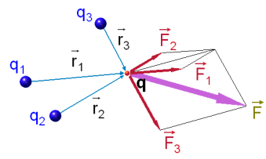
4. Intensidad del campo eléctrico de una carga puntual
Definición de intensidad de campo eléctrico ($\vec{E}$)
De igual manera a como se hizo en el tema anterior, podemos definir la intensidad del campo eléctrico, $\vec{E}$, creado por una carga puntual $Q$ en un punto $P$ que dista $r$ de $Q$, como la fuerza que sufriría una carga de prueba ($+1\text{ C}$) situada en dicho punto.
Donde $\vec{u}_r$ es un vector unitario en la dirección de la recta que une $Q$ con $P$ y con sentido hacia fuera o hacia dentro, según la carga $Q$ creadora del campo sea positiva ($+$) o negativa ($-$) respectivamente. Para recordarlo nos fijamos en que el sentido de $\vec{E}$ será el del movimiento de una carga positiva que sufriera la acción de $\vec{E}$.
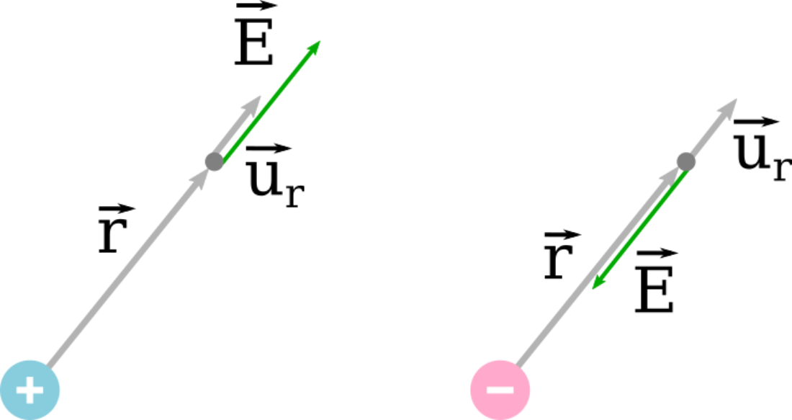
El concepto es totalmente análogo a la intensidad del campo gravitatorio: la presencia de la carga $Q$ modifica el espacio que la rodea de modo que otra carga en esa región nota la perturbación y sufre la fuerza de Coulomb.
Las unidades del campo eléctrico en el Sistema Internacional (S.I.) son $\text{N/C}$, y también se utiliza $\text{V/m}$.
Relación entre el campo y la fuerza eléctrica
Si en un cierto punto del seno de un campo eléctrico se sitúa una carga $q$ distinta de la de prueba ($1\text{ C}$), sufriría una fuerza:
En esta relación hemos de tomar $q$ con su signo, pues las cargas positivas sufren una fuerza eléctrica en la dirección y sentido del campo, pero las negativas sufren una fuerza eléctrica en sentido contrario.
Campo electrostático de un conjunto de cargas puntuales
El principio de superposición aplicado al campo eléctrico creado por un conjunto de cargas puntuales en un punto $P$ establece que es la suma vectorial de los campos creados por cada una de ellas como si estuviera sola.
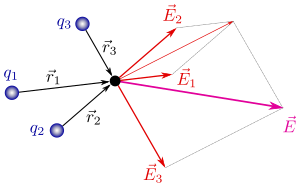
Líneas de campo o líneas de fuerza del campo eléctrico
Son líneas imaginarias coincidentes con la trayectoria que seguiría la carga de prueba ($+1\text{ C}$) abandonada en reposo en cada punto del campo. Desde un punto de vista matemático se definen como líneas tangentes al vector intensidad de campo en cada punto. Son muy útiles porque permiten visualizar las zonas en que el campo eléctrico es más intenso (líneas más apretadas) y los efectos que tendría sobre una carga positiva en reposo.
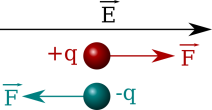
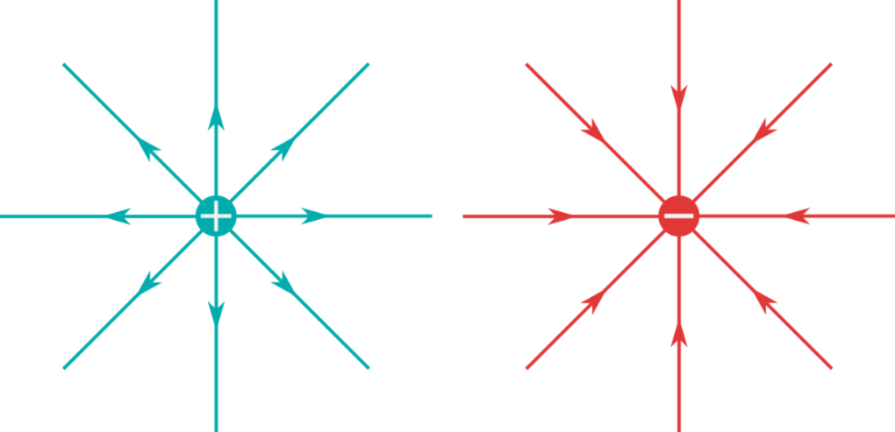
5. Energía potencial electrostática de una carga en presencia de otra. Superposición.
La fuerza eléctrica es una fuerza conservativa; por tanto, puede definirse la función energía potencial, $U(r)$, del mismo modo a como hicimos en el tema anterior con la fuerza gravitatoria. Así, el trabajo de la fuerza eléctrica será igual a la disminución de la energía potencial eléctrica (la fuerza eléctrica siempre tratará de hacer disminuir la energía potencial eléctrica). Matemáticamente se calcula:
De donde se deduce que:
$$U(r) = \frac{KQq}{r} + \text{cte}$$(Nótese que si las cargas son de signos opuestos, la fuerza es atractiva y la expresión de la energía potencial es equivalente a la obtenida en el tema de gravitación).
La energía potencial eléctrica, como las demás, está indeterminada porque la constante que aparece en su expresión puede tomar cualquier valor. Para hablar de energía potencial eléctrica en términos absolutos es pues necesario elegir un origen de $U$. Para hacer que la constante sea $0$, se conviene en que la energía potencial eléctrica de dos cargas es nula cuando estén separadas una distancia que tiende a infinito:
Por tanto, la energía potencial eléctrica queda definida como:
$$U(r) = \frac{KQq}{r}$$En esta expresión las cargas $Q$ y $q$ han de tomarse con su signo, resultando pues una energía potencial positiva cuando las cargas sean del mismo signo y negativa en caso contrario.
⚡ Simulación Interactiva: Energía Potencial $U(r)$ y Espontaneidad
Ajusta la distancia inicial $r$, cambia el signo de $q$ y pulsa Soltar carga para observar cómo el sistema evoluciona espontáneamente disminuyendo siempre su energía potencial $U(r)$.
➕ Saber más: Gráficas de la energía potencial eléctrica $U(r)$ según el signo de las cargas
Cargas de igual signo
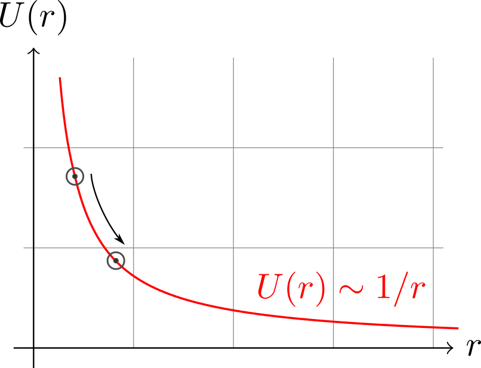
La acción del campo hará que las cargas de igual signo se alejen para así disminuir la energía potencial (fuerza repulsiva).
Cargas de distinto signo
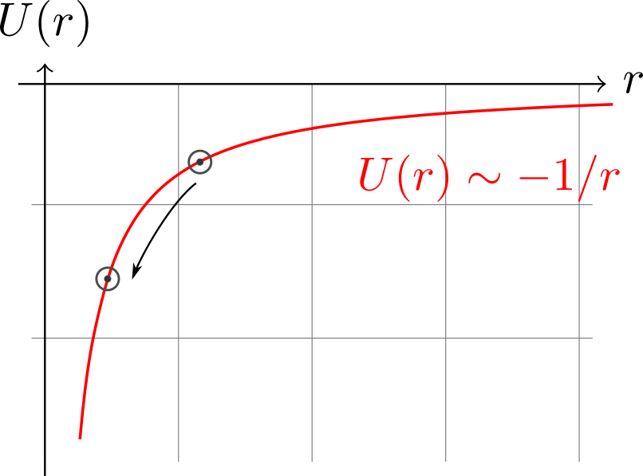
La acción del campo hará que las cargas de diferente signo se acerquen para así disminuir la energía potencial (fuerza atractiva).
Significado físico de la energía potencial eléctrica en un punto
Calculemos el trabajo que realiza la fuerza eléctrica al desplazar una carga desde una posición inicial $i$ hasta el infinito:
La energía potencial eléctrica de dos cargas separadas una distancia $r$ es pues la energía que transfiere la fuerza eléctrica cuando se alejan hasta el infinito, o bien la energía que debe transferir una fuerza exterior igual que la eléctrica pero de sentido contrario para acercarlas desde el infinito hasta la distancia final $r$ a la que se encuentran.
- Si $U > 0$ (cargas de igual signo): La energía potencial representa el trabajo que hace la fuerza eléctrica para llevar la carga hasta el infinito, o también la energía que pierde el sistema formado por las dos cargas cuando se separan hasta el infinito. También coincide con la energía que hay que aportar para traerlas desde el infinito hasta la distancia $r$ (mediante una fuerza exterior igual a la eléctrica).
- Si $U < 0$ (cargas de distinto signo): La energía potencial representa el trabajo que realiza una fuerza externa para alejar la carga hasta el infinito, o el trabajo que realiza la fuerza eléctrica para traer la carga desde el infinito hasta la distancia $r$; también (en valor absoluto) la energía mínima necesaria para separarlas hasta el infinito o la energía que pierden cuando se acercan desde el infinito hasta la distancia $r$ (si no hay rozamientos, esta energía potencial se convierte íntegramente en energía cinética).
Significado físico de la variación de la energía potencial eléctrica
La variación de energía potencial, como hemos visto en el punto anterior, representa la energía que gana o pierde el sistema cuando las cargas se alejan o acercan, o el trabajo que hay que realizar para acercarlas o alejarlas. Su expresión en general es:
Cargas del mismo signo
Cuando se acercan aumenta la energía potencial y cuando se alejan disminuye:
- Si $r_f < r_i$ (acercamiento): $\Delta U > 0$
- Si $r_f > r_i$ (alejamiento): $\Delta U < 0$
La fuerza eléctrica va en el sentido de hacer disminuir la energía potencial eléctrica de las cargas. Para hacer que $U$ aumente es necesaria la participación de una fuerza exterior.
Cargas de distinto signo
Cuando se acercan disminuye la energía potencial y cuando se alejan aumenta:
- Si $r_f < r_i$ (acercamiento): $\Delta U < 0$
- Si $r_f > r_i$ (alejamiento): $\Delta U > 0$
Recuerda que lo espontáneo (para el campo) es reducir la energía del sistema; por tanto, dos cargas eléctricas de signo opuesto tratarán de acercarse reduciendo su energía potencial. La acción de una fuerza externa producirá un aumento de la energía potencial electrostática.
Principio de superposición
El principio de superposición aplicado al cálculo de la energía potencial eléctrica de un sistema de $N$ cargas puntuales establece que la energía potencial eléctrica total del sistema es la suma de la energía potencial de todos los pares posibles de cargas puntuales existentes, calculando la energía potencial de cada par como si las demás cargas no estuvieran presentes.
6. El potencial electrostático de una carga puntual y de un conjunto de cargas puntuales.
Definición de potencial eléctrico ($V$)
Se define el potencial eléctrico en un punto como la energía potencial que adquiere la carga de prueba ($+1\text{ C}$) cuando se sitúa en ese punto por la presencia de otra u otras cargas creadoras de un campo eléctrico.
Si la carga creadora del campo es una carga puntual $Q$, el potencial a una distancia $r$ de ella es:
Donde hay que tomar $Q$ con su signo, por lo que podemos tener potenciales $V$ positivos o negativos. Así, el potencial $V$ creado por una carga positiva va desde $0$ (a distancias muy lejanas a $Q$) hasta $+\infty$ (para puntos muy próximos a ella), y para una carga negativa va desde $0$ (a distancias muy lejanas a $Q$) hasta $-\infty$ (para puntos muy próximos a ella).
Relación entre potencial eléctrico y energía potencial eléctrica
Si en un punto del campo eléctrico se sitúa una carga $q$, ésta adquiere una energía potencial eléctrica que es:
Las unidades del potencial eléctrico en el S.I. son el $\text{J/C} = \text{Voltio (V)}$.
- Significado de $V$ en un punto: $V(r)$ es la energía necesaria (aplicando una fuerza exterior igual pero de sentido contrario a la eléctrica) para traer $+1\text{ C}$ desde el infinito hasta la distancia $r$ de la carga $Q$ que crea el campo. Coincide con la energía potencial electrostática del sistema formado por $Q$ y por $+1\text{ C}$ separados una distancia $r$.
- Significado de $\Delta V$ entre dos puntos de un campo eléctrico: Es la energía que una fuerza exterior (igual pero de sentido contrario a la eléctrica) ha de transferir para trasladar $+1\text{ C}$ desde la posición inicial a la final.
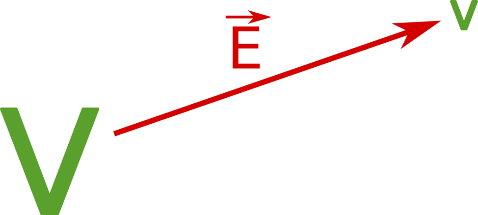
Superficies equipotenciales
Una superficie equipotencial es el lugar geométrico de los puntos del espacio en los que el potencial eléctrico toma el mismo valor. Para una carga puntual aislada, las superficies equipotenciales son esferas concéntricas con la carga. Para dos cargas puntuales, estas superficies adoptan la forma que se muestra en la siguiente figura:
🧭 Simulación Interactiva: Líneas de Campo y Equipotenciales
Arrastra las cargas con el ratón o mueve el cursor sobre el espacio para medir el vector $\vec{E}$ (siempre perpendicular a las equipotenciales y apuntando hacia potenciales $V$ menores).
Principio de superposición para V
El potencial creado por un conjunto de cargas puntuales en un punto $P$ es la suma algebraica de los creados por cada una de ellas por separado:
Por tanto, la energía potencial que adquiere una carga $q$ colocada en dicho punto es:
$$U(P) = qV_T$$📝 Ejercicios recomendados: 5, 13
Relación entre el trabajo y el potencial eléctrico
Puesto que el trabajo de la fuerza eléctrica está relacionado con la variación de energía potencial y ésta a su vez con el potencial, podemos establecer una relación sencilla entre el trabajo y el potencial:
- Si $W > 0$: La fuerza eléctrica va en el sentido del desplazamiento, por lo que no es necesaria otra fuerza externa para que dicho desplazamiento se produzca.
- Si $W < 0$: La fuerza eléctrica va en sentido contrario al desplazamiento, por lo que será necesaria una fuerza externa para llevar la carga de uno a otro punto.
7. Teorema de Gauss para el campo eléctrico
Definición de flujo
Se define el flujo elemental del campo eléctrico como el número de líneas de campo que atraviesan una superficie elemental $dS$.
El flujo elemental que atraviesa una superficie también elemental $dS$ (plana por lo pequeña que es) dependerá de la densidad de líneas, del tamaño de la superficie, pero también de su orientación respecto al campo. Así, asignamos a la superficie un vector superficie $d\vec{S}$ cuyo módulo coincide con el valor del área de la superficie, de dirección perpendicular a ella y sentido hacia fuera. Para el campo eléctrico:
El flujo a través de una superficie finita $S$ será por tanto:
$$\Phi = \int_S \vec{E}\cdot d\vec{S}$$El flujo eléctrico en el S.I. se mide en $\text{N}\cdot\text{C}^{-1}\cdot\text{m}^2$.
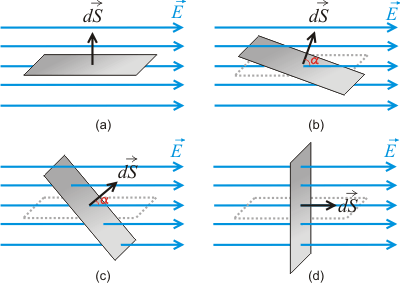
Significado del signo del flujo en una superficie cerrada:
- Si $\Phi > 0$ (positivo), indica que las líneas atraviesan la superficie hacia fuera: es flujo saliente.
- Si $\Phi < 0$ (negativo), indica lo contrario: es flujo entrante.
Teorema de Gauss
El teorema de Gauss —uno de los más importantes de la Física puesto que permite el cálculo del campo gravitatorio y eléctrico para distribuciones continuas de masa o carga con gran simetría (hilos, láminas, esferas huecas o macizas, cilindros...)— establece que el valor del flujo del campo eléctrico que atraviesa una superficie cerrada cualquiera $S$ depende únicamente de la carga neta encerrada por dicha superficie.
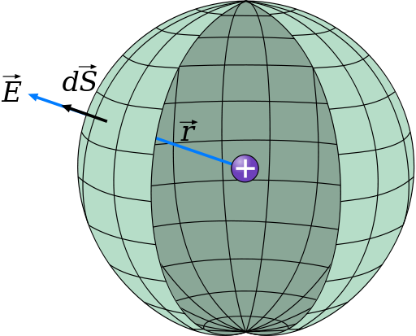
Cálculo del campo eléctrico creado por una esfera conductora hueca
La carga en una esfera conductora hueca se distribuye uniformemente en su superficie externa de radio $R_{\text{esfera}}$:
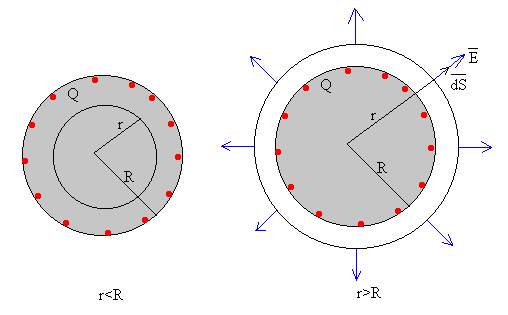
1. Campo en el interior ($r < R_{\text{esfera}}$)
Para puntos interiores trazamos una superficie gaussiana esférica concéntrica con la conductora de radio $r < R_{\text{esfera}}$. Esta gaussiana no encierra carga alguna ($Q_{\text{encerrada}} = 0$), por lo que el flujo en el interior es nulo y consecuentemente el campo también lo es:
Por tanto, el campo eléctrico es nulo en el interior de una jaula de Faraday.
2. Campo en el exterior ($r > R_{\text{esfera}}$)
Tomando una superficie gaussiana esférica de radio $r > R_{\text{esfera}}$ concéntrica con ella, dado que $\vec{E}$ y $d\vec{S}$ son paralelos ($\alpha = 0^\circ$) y $E$ es constante en toda la esfera:
Coincide con el de una carga puntual $Q_{\text{encerrada}}$ colocada en su centro. Por tanto, las esferas cargadas pueden considerarse como cargas puntuales para distancias mayores a su radio.
Relación entre campo y potencial electrostáticos
Supongamos que una carga $Q$ crea un campo eléctrico y en su seno se coloca una carga $q$ de prueba. La fuerza eléctrica ejercerá un trabajo sobre $q$ que vale:
O en forma diferencial (en una dirección radial $r$):
$$E = -\frac{dV}{dr}$$La rapidez con que varía el potencial eléctrico con la distancia a la carga creadora del campo en un punto coincide con el módulo del campo eléctrico en ese punto. Desde un punto de vista más cualitativo, podríamos decir que cuando las superficies equipotenciales están muy apretadas (varían mucho en poca distancia) en una región es porque el campo eléctrico es muy intenso en esa región. El signo negativo ($-$) que aparece en la expresión anterior tiene en cuenta que las cargas positivas crean potenciales cada vez menores con la distancia (cuando nos alejamos $dV < 0$ y $dr > 0$, por lo que su cociente sería negativo y el módulo del campo ha de ser positivo).
Por el mismo motivo que en el campo gravitatorio, podemos decir que las líneas de campo son perpendiculares a las superficies equipotenciales, puesto que cuando una carga se desplaza por una superficie equipotencial ($\Delta V = 0$), el campo eléctrico no realiza trabajo alguno sobre ella ($W = -q\Delta V = 0$).
Campo eléctrico en el interior de un condensador plano paralelo
En la parte central de un condensador de placas plano-paralelas separadas una distancia $d$, se puede considerar sin demasiado error que el campo eléctrico $\vec{E}$ es uniforme (constante en módulo, dirección y sentido), por lo que la diferencia de potencial entre sus armaduras se obtiene por integración directa de la relación entre campo y potencial eléctricos:
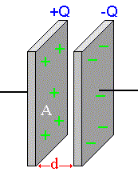
8. Movimiento de una partícula cargada en el seno de un campo eléctrico
Cuando una partícula de carga $q$ y masa $m$ se introduce en el interior de un campo eléctrico $\vec{E}$, experimenta una fuerza eléctrica $\vec{F} = q\vec{E}$ y su energía potencial eléctrica en un punto de potencial $V$ será $U = qV$.
Al estar sometida a la fuerza eléctrica (suponiendo un campo eléctrico uniforme), sufrirá una aceleración constante dada por la segunda ley de Newton:
Si el campo eléctrico es constante (uniforme), la partícula describe un Movimiento Rectilíneo Uniformemente Acelerado (MRUA) en la dirección del campo (o un tiro parabólico si entra con una velocidad inicial perpendicular a las líneas de campo). Las ecuaciones cinemáticas que describen el MRUA son:
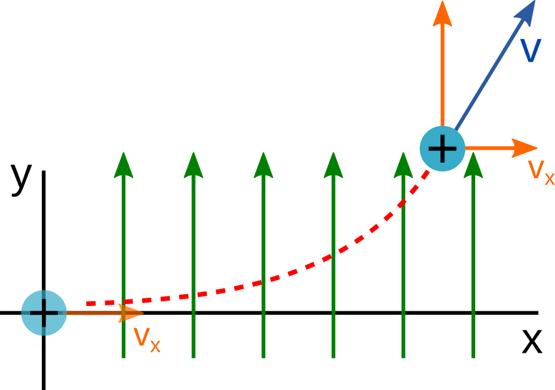
Enfoque energético: Conservación de la energía mecánica
Además, como la fuerza eléctrica es una fuerza conservativa (si no actúan otras fuerzas no conservativas), se conserva la energía mecánica del sistema:
Teniendo en cuenta que la variación de energía potencial eléctrica es $\Delta U = q\Delta V = q(V_f - V_i)$.
🎯 Simulación Interactiva: Deflexión en un Condensador Plano
Selecciona la partícula (Electrón, Protón o Neutrón), ajusta el campo eléctrico $\vec{E}$ y la velocidad horizontal $v_x$, y pulsa Disparar.
Ejercicios de Clase
Ley de Coulomb
-
Una partícula de masa
-
Una bolita de plástico de
Energía y trabajo
-
Razone las respuestas a las siguientes preguntas: a) Una carga negativa se mueve en la dirección y sentido de un campo eléctrico uniforme. ¿Aumenta o disminuye el potencial eléctrico en la posición de la carga? ¿Aumenta o disminuye su energía potencial? b) ¿Cómo diferirían las respuestas del apartado anterior si se tratara de una carga positiva? c) Al moverse una partícula cargada en la dirección y sentido de un campo eléctrico, aumenta su energía potencial. ¿Qué signo tiene la carga de la partícula? [Sol: Disminuye/Aumenta;
-
En una región del espacio existe un campo electrostático generado por una carga puntual negativa,
-
Una partícula cargada se mueve espontáneamente hacia puntos en los que el potencial electrostático es mayor. Razone si, de ese comportamiento, puede deducirse el signo de la carga. [Sol:
-
Justifique razonadamente el signo de la carga de una partícula que se desplaza en la dirección y sentido de un campo eléctrico uniforme, de forma que su energía potencial aumenta. [Sol:
- Comente las siguientes afirmaciones relativas al campo eléctrico: a) Cuando una carga se mueve sobre una superficie equipotencial no cambia su energía mecánica. b) Dos superficies equipotenciales no pueden cortarse. ¿Se realiza trabajo al trasladar una carga (positiva o negativa) entre dos puntos pertenecientes a una misma superficie equipotencial? [Sol: Verdad; Verdad/No]
-
El campo eléctrico en un punto
-
Un electrón se mueve con una velocidad de
-
Una partícula de
-
Una carga de
-
Dos cargas puntuales iguales, de
-
Se tienen tres cargas eléctricas en las siguientes posiciones
Anexo I: Para practicar
-
Una partícula cargada negativamente pasa de un punto $A$, cuyo potencial es $V_A$, a otro $B$, cuyo potencial es $V_B > V_A$. Razone si la partícula gana o pierde energía potencial. [Sol: pierde]
👁️ Ver solución paso a paso
Como $\Delta U = q(V_B - V_A)$, siendo $q < 0$ y $V_B - V_A > 0$, resulta $\Delta U < 0$. Por tanto, la partícula pierde energía potencial (se mueve espontáneamente hacia potenciales mayores). -
Dos cargas eléctricas puntuales, positivas e iguales están situadas en los puntos $A$ y $B$ de una recta horizontal. Conteste razonadamente a las siguientes cuestiones: a) ¿Puede ser nulo el potencial en algún punto del espacio que rodea a ambas cargas? ¿Y el campo eléctrico? b) Si se separan las cargas a una distancia doble de la inicial, ¿se reduce a la mitad la energía potencial del sistema? [Sol: No (finito) / Sí; Sí]
👁️ Ver solución paso a paso
a) El potencial $V = \frac{Kq}{r_A} + \frac{Kq}{r_B}$ es suma de dos términos estrictamente positivos en cualquier punto finito, por lo que no se anula (salvo en el infinito). En cambio, el campo eléctrico sí se anula en el punto medio del segmento $AB$, donde $\vec{E}_A$ y $\vec{E}_B$ tienen igual módulo y sentidos opuestos.
b) Sí: Como $U = \frac{Kq^2}{r}$, si $r' = 2r$, entonces $U' = \frac{Kq^2}{2r} = \frac{U}{2}$.
-
a) Razone si la energía potencial electrostática de una carga $q$ aumenta o disminuye al pasar de un punto $A$ a otro $B$, siendo el potencial en $A$ menor que en $B$. b) El punto $A$ está más alejado que el $B$ de la carga $Q$ que crea el campo. Razone si la carga $Q$ es positiva o negativa. Repita ahora el ejercicio suponiendo que el potencial en $A$ es mayor que en $B$. [Sol: depende del signo de $q$; $Q < 0$; $Q > 0$]
👁️ Ver solución paso a paso
a) Dado que $\Delta U = q(V_B - V_A)$ y $V_B - V_A > 0$, depende del signo de $q$: si $q > 0$, $U$ aumenta; si $q < 0$, $U$ disminuye.
b) Si $r_A > r_B$ y $V_A < V_B$ (el potencial crece al acercarse a $Q$), entonces $Q < 0$. Si por el contrario $V_A > V_B$ (el potencial decrece al alejarse), entonces $Q > 0$.
-
¿Puede anularse el campo gravitatorio y/o el campo eléctrico en un punto del segmento que une a dos partículas cargadas? Razone la respuesta. [Sol: $\vec{g}$ sí; $\vec{E}$ dependerá del signo relativo de las cargas]
👁️ Ver solución paso a paso
El campo gravitatorio $\vec{g}$ siempre puede anularse en un punto interior del segmento porque ambas masas crean campos atractivos en sentidos opuestos en esa zona. El campo eléctrico $\vec{E}$ solo puede anularse en un punto del segmento si ambas cargas tienen el mismo signo (ambas positivas o ambas negativas); si tienen signos opuestos, ambos campos apuntan en el mismo sentido entre ellas y nunca se anulan en el segmento interior. -
Dos cargas puntuales $q$ y $-q$ se encuentran sobre el eje $X$, en $x = a$ y en $x = -a$, respectivamente. Escriba las expresiones del campo electrostático y del potencial electrostático en el origen de coordenadas. [Sol: $\vec{E} = -\frac{2Kq}{a^2}\vec{i}$; $V = 0$]
👁️ Ver solución paso a paso
En $(0,0)$ ambos vectores campo apuntan hacia la carga negativa (en $x = -a$, sentido $-\vec{i}$):
$$\vec{E}(0,0) = -\frac{Kq}{a^2}\vec{i} - \frac{Kq}{a^2}\vec{i} = -\frac{2Kq}{a^2}\vec{i} \qquad ; \qquad V(0,0) = \frac{Kq}{a} + \frac{K(-q)}{a} = 0$$
-
Si se conoce el potencial electrostático en un solo punto, ¿se puede determinar el campo eléctrico en dicho punto? Razone la respuesta. [Sol: No]
👁️ Ver solución paso a paso
No. El campo eléctrico depende de la variación espacial del potencial ($\vec{E} = -\vec{\nabla}V$, o $E = -dV/dr$), no de su valor puntual. Conocer el valor de una función en un único punto no permite conocer su derivada ni su dirección de cambio. -
Una partícula cargada negativamente pasa de un punto $A$, cuyo potencial es $V_A$, a otro $B$, cuyo potencial es $V_B < V_A$. Razone si la partícula gana o pierde energía potencial. [Sol: gana energía potencial ($F_{\text{ext}}$)]
👁️ Ver solución paso a paso
Como $\Delta U = q(V_B - V_A)$, al ser $q < 0$ y $V_B - V_A < 0$, el producto es positivo ($\Delta U > 0$). La partícula gana energía potencial (requiriendo la acción de una fuerza externa o pérdida de energía cinética). -
Una bolita de $1\text{ g}$, cargada con $+5 \cdot 10^{-6}\text{ C}$, pende de un hilo que forma $60^\circ$ con la vertical en una región en la que existe un campo eléctrico uniforme en dirección horizontal. a) Explique con ayuda de un esquema qué fuerzas actúan sobre la bolita y calcule el valor del campo eléctrico. b) Razone qué cambios experimentaría la situación de la bolita si: i) se duplicara el campo eléctrico; ii) se duplicara la masa de la bolita. [Sol: $3464\text{ N/C}$]
👁️ Ver solución paso a paso
a) Actúan el peso ($mg$), la tensión ($T$) y la fuerza eléctrica ($qE$): $\tan 60^\circ = \frac{qE}{mg} \implies E = \frac{10^{-3} \cdot 10 \cdot \tan 60^\circ}{5 \cdot 10^{-6}} = 3464\text{ N/C}$.
b) i) Si se duplica $E$, $\tan\theta' = 2\tan 60^\circ \implies \theta' = 73,9^\circ$ (aumenta el ángulo con la vertical). ii) Si se duplica $m$, $\tan\theta'' = \frac{1}{2}\tan 60^\circ \implies \theta'' = 40,9^\circ$ (disminuye el ángulo con la vertical).
-
Dos cargas puntuales de $+2\ \mu\text{C}$, se encuentran situadas sobre el eje $X$ en los puntos $x_1 = -1\text{ m}$ y $x_2 = 1\text{ m}$, respectivamente. a) Calcule el potencial electrostático en el punto $(0, 0,5)\text{ m}$. b) Determine el incremento de energía potencial electrostática al traer una tercera carga de $-3\ \mu\text{C}$ desde el infinito hasta el punto $(0, 0,5)\text{ m}$. [Sol: $32\,200\text{ V}$; $-0,0966\text{ J}$]
👁️ Ver solución paso a paso
a) La distancia desde ambas cargas al punto $(0, 0,5)$ es $r = \sqrt{1^2 + 0,5^2} = \sqrt{1,25} = 1,118\text{ m}$:
$$V = 2 \cdot \frac{9 \cdot 10^9 \cdot 2 \cdot 10^{-6}}{\sqrt{1,25}} = 32\,200\text{ V}$$
b) $\Delta U = q_3(V - 0) = -3 \cdot 10^{-6} \cdot 32\,200 = -0,0966\text{ J}$.
-
Dos cargas $q_1 = -2 \cdot 10^{-8}\text{ C}$ y $q_2 = 5 \cdot 10^{-8}\text{ C}$ están fijas en los puntos $x_1 = -0,3\text{ m}$ y $x_2 = 0,3\text{ m}$ del eje $OX$, respectivamente. a) Dibuje las fuerzas que actúan sobre cada carga y determine su valor. b) Calcule el valor de la energía potencial del sistema formado por las dos cargas y haga una representación aproximada de la energía potencial del sistema en función de la distancia entre las cargas. Dato: $K = 9 \cdot 10^9\text{ N m}^2\text{ C}^{-2}$ [Sol: $25\ \mu\text{N}$; $-15\ \mu\text{J}$]
👁️ Ver solución paso a paso
a) La distancia entre ellas es $r = 0,6\text{ m}$. Al ser de signos opuestos, las fuerzas son atractivas ($\vec{F}_{21}$ hacia $+\vec{i}$ y $\vec{F}_{12}$ hacia $-\vec{i}$):
$$F = \frac{9 \cdot 10^9 \cdot 2 \cdot 10^{-8} \cdot 5 \cdot 10^{-8}}{0,6^2} = 2,5 \cdot 10^{-5}\text{ N} = 25\ \mu\text{N}$$
b) $U = \frac{K q_1 q_2}{r} = \frac{9 \cdot 10^9 \cdot (-2 \cdot 10^{-8}) \cdot 5 \cdot 10^{-8}}{0,6} = -1,5 \cdot 10^{-5}\text{ J} = -15\ \mu\text{J}$. La gráfica $U(r)$ es una hipérbola negativa creciente hacia $0$ cuando $r \to \infty$ ($U(r) \sim -1/r$).